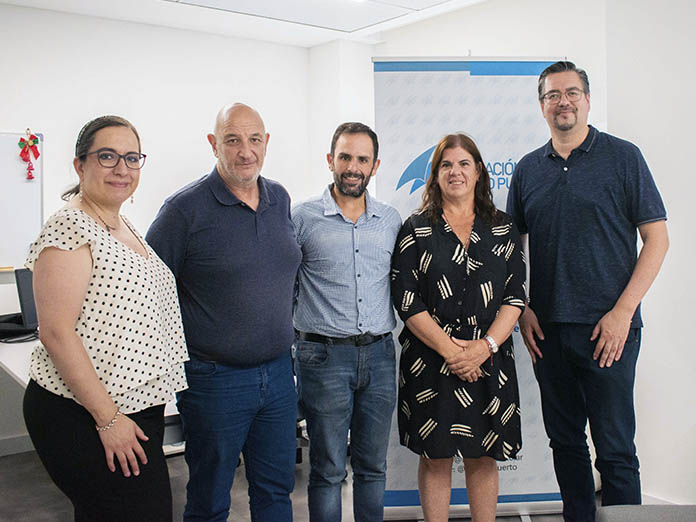

Luis Ascencio: “El liderazgo de la comunidad logística empieza por la autoridad portuaria local”

¿Cómo nace el concepto de Comunidad Logística Portuaria?
Desde principios de los años 2000 desembarca en Argentina, México y Chile el concepto de “Comunidad Logística Portuaria” principalmente influida por experiencias que provenían desde Barcelona, España. Se comienza a trabajar para que el puerto no sea un ente aislado en donde terminales, autoridades, empresas afines y sobre todo las ciudades no funcionen como entidades estancas y aisladas y comiencen a interoperar todos juntos en la tramitación y coordinación dentro de la logística portuaria. En ese momento, algunos puertos comenzaron a motivar la idea conformar estas comunidades, y se comienza a manejar el concepto de “gobernanza de esas comunidades”. A nosotros nos tocó iniciar el camino en este aspecto en el Puerto San Antonio de Chile, en donde tuvimos que armar esa comunidad logística que hoy ya tiene 26 socios estratégicos que se ponen al servicio de la actividad portuaria. A partir de esa primera experiencia fuimos convocados por el SELA (Sistema Económico Latinoamericano y del Caribe), en ese momento pasamos a una segunda etapa en donde las mejores prácticas que empezamos a ver en distintos países las concentramos y comenzamos a crear una red de puertos digitales y colaborativos. Comenzamos a incorporar distintos países y hoy en día somos 30 puertos trabajando con este concepto.
¿Cómo es el estado de situación en Latinoamérica respecto a Comunidades Logística?
Muchos de los puertos que se sumaron recogieron las ideas, cada uno a distinta velocidad fueron implementando buenas prácticas en este sentido. Por ejemplo, en Chile, desde hace 4 años atrás, esto pasó a ser una política de estado, es decir que las 10 principales empresas portuarias tenían que conformar una comunidad logística y puedo decir que hoy en día todas esas empresas ya tienen conformada su comunidad. Los esfuerzos se siguen dando para que cada vez más puertos puedan armar sus comunidades y los esfuerzos no terminan en instituciones multilaterales como el SELA.
¿Quién debería tomar el liderazgo en la gobernanza de la comunidad logística portuaria?
Las comunidades tienen muchos actores, al final el poder, en capacidad de tomar decisiones, se distribuye entre esos actores, pero al principio, el liderazgo público es fundamental, tiene que ser de la autoridad portuaria. Hay muchos ejemplos en donde se ve que si la autoridad portuaria no se involucra, el privado menos va a pujar por conformar sus comunidades.

¿Qué papel juega a su criterio la digitalización para promover al puerto como facilitador del comercio internacional?
Ya se está generando, prácticamente, un ecosistema digital e informático. Si a toda la información y datos que tenemos le sumamos inteligencia artificial, predicciones e información en anticipo, podemos crear otros productos que ayuden a nuestros clientes. Fidelizar al cliente es muy importante y sobre todo porque se trata de una industria de bajos márgenes y es intensiva en activos. La productividad es muy importante, por lo tanto, si no tienes tecnología, si no tienes los datos en tiempo real, el impacto económico negativo es muy grande.
¿Cuál debería ser el rol de la digitalización en la integración del sistema público y el mundo privado?
El organismo público, como ser aduanas, ministerios economía o secretarías de comercio exterior tiene la necesidad de adaptar sus sistemas para acoplarse a los sistemas informáticos de los privados. Documentación digital, estandarización y organización de la información. Hay que romper con las “islas informáticas”, al final esto es como una red neuronal que está conectada en todos sus nodos.
¿Qué tan importante resultó estar digitalizados ante el evento pandémico del 2020?
Después de la pandemia se comenzó a hablar de “puertos resilientes”, que son aquellos que tienen esta gobernanza y que pueden reaccionar ante situaciones extremas y vimos que muchos puertos que no tenían esta condición fueron más lentos para la toma de decisiones. Yo creo que una variable que hoy en día se está sumando en el mundo portuario es la de crear “capacidad de resiliencia” y la tecnología ha demostrado que permite realizar este tipo de competencia.

LUIS ASCENCIO >
Ingeniero Industrial, especialista en transporte y logística. Trabaja en asesoría internacional
en logística de transportes, en investigación aplicada en logística portuaria y es consultor
tecnológico en “ventanillas logísticas” de facilitación de comercio.